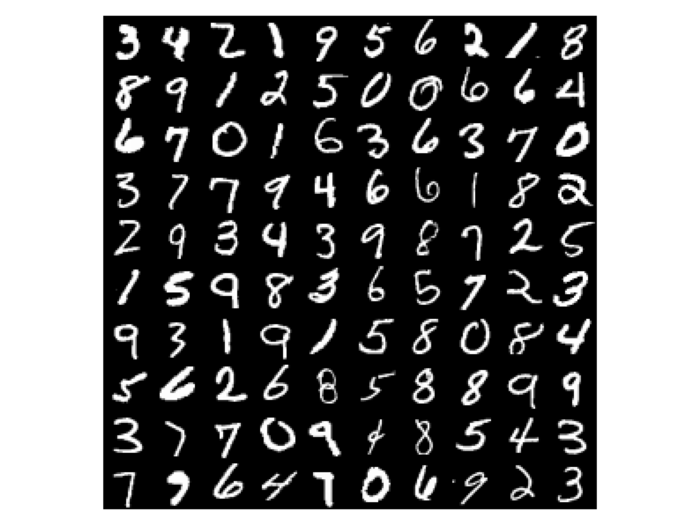

# An Introduction to Deep Metric Learning Matthew Nokleby, Lead AI Scientist @ Target
## About me ### Work on machine learning + computer vision at Target ### Previously: Asst. Professor of Electrical Engineering at Wayne State University, Detroit, MI ### Research interests: ML/CV, information theory, distributed learning, stochastic optimization ### Papers/etc. at: http://docnok.github.io
# A brief history of deep learning
## Deep learning pre-history <span class="container"> <span class="lcol"> ### Convolutional neural networks go back (at least) to the 1980s! ### **LeNet**: CNN for handwritten digit recognition, 1989 ### Elements familiar to modern DL: - Convolutional filters extract features - Trained via backpropagation + SGD </span> <span class="rcol"> </span> </span>
## Deep learning pre-history ### LeNet-5: updated CNN from 1998 ### Similar ideas, more "modern" terminology <img src="images/lenet-5.gif" height=200>
## Modern DL: AlexNet ### Image classification network announced in 2012 ### Five convolutional + three fully-connected layers ### Rectified linear unit (ReLU) activations between layers
## Modern DL: AlexNet ### Won 2012 ImageNet challenge by a 10+% margin: - Learn 1000 object classes - Training set of 1.2M+ images <small>[ImageNet dataset]</small>
## How AlexNet works ### Convolutional + FC layers extract high-level features ### 1000-way softmax layer performs logistic regression
## Why AlexNet works <span class="container"> <span class="lcol"> ### Stacked convolutions extract good visual features ### ImageNet has enough data to train a "deep" network ### GPUs accelerate prototyping </span> <span class="rcol"> <img src="images/convolutions.png" width=450> </span> </span>
## Image classification pipeline ### Parameterize CNN by `$g_\theta(\mathbf{x}) = \hat{y}$`: - `$\mathbf{x}$`: input image - `$\theta$`: CNN weights + biases - `$\hat{y}$`: estimate of class probabilities
## Image classification pipeline ### Large labeled dataset: `$$ T = \{(\mathbf{x}_1, y_1), \cdots, (\mathbf{x}_k, y_k)\}$$` ### Train via mini-batch SGD: `$$ \theta_{t+1} = \theta_{t+1} - \gamma_t \frac{1}{|B|}\sum_{i \in B} \nabla L(y_i, g(\mathbf{x}_i))$$`
## Deep learning since AlexNet ### "Better" network architectures: - Deeper: VGG, ResNet, Inception - More lightweight: SqueezeNet, MobileNet ### Substantial accuracy improvements <img src="images/inception.png" width=750 class="plain"> <small>[InceptionV1 architecture]</small>
## Deep learning since AlexNet ### Expanded problem domains: - Object detection, segmentation: SSD, Mask R-CNN - Text processing: RNNs/LSTMs <small>[SSD and Mask R-CNN]</small>
## Deep learning since AlexNet ### Heuristic tips and tricks: - Transfer learning via pre-trained networks - New optimizers: AdaGrad, Adam, RMSProp - Adversarial training / GaNs
# Closed vs. open set problems
## Closed-set problems ### Static, unambiguous object classes ### Plenty of training data for each class ### Objective is simple: classify, localize, etc. ### ### **Many** real-world problems do not fit this paradigm!
## Open set problems ### Extreme + fine-grained classification: - Thousands or millions of (time-varying) image classes - Classes are variations of similar objects <small>[Stanford Online Products dataset]</small>
## Open set problems ### Particular object retrieval: - Search image catalog for a query image - Handle never-before-seen queries <small>[Google Landmarks dataset]</small>
## Open set problems ### Visual complementarity: - Search image catalog for **complementary** items - Fashion, style recommendations <small>[Polyvore dataset]</small>
## Open set problems ### Why can't we use the standard pipeline? - Tough to retrain model when catalog changes - Often don't even know the object classes - We aren't always classifying
## Metric learning! ### Reminder: standard DL learns features + classifier: - Convolutional + FC layers => high-level features - Softmax layer does logistic regression on features
## Metric learning! ### Query against catalog of image: - Compute CNN features of query image - Inference via k-nearest neighbors ### Only works if we have trained a "good" metric
## Rest of this talk 1. How do we train a deep metric? 2. How does DML work on real data? 3. Where to go for more information?
# Deep metric learning
## Formal definition ### Supervised metric learning: - Input images: `$\mathbf{x} \in \mathbb{R}^n$` - Pairwise labeling: `$y(\mathbf{x}_i, \mathbf{x}_j) \in\{ 0, 1\}$` ### Classification / retrieval: Are `$\mathbf{x}_i$`, `$\mathbf{x}_y$` of the same "thing"? ### Compatibility: Are `$\mathbf{x}_i$`, `$\mathbf{x}_y$` images of compatible things?
## Formal definition ### Deep feature embedding: - `$g_\theta: \mathbb{R}^n \to \mathbb{R}^m$` maps images to features - Network weights `$\theta \in \Theta$` determine embedding
## Formal definition ### Embedding defines a metric over images: `$$d(\mathbf{x}_i, \mathbf{x}_j) = || g(\mathbf{x}_i) - g(\mathbf{x}_j)||$$`, ### where `$|| \cdot ||$` is usually the Euclidean distance
## DML Architecture ### Mapping `$g_\theta(\cdot)$` is usually a CNN ### Usually use last convolutional layer + FC layers <small>[VGG19 architecture]</small>
## Learning a deep metric <span class="container"> <span class="lcol"> ### Training set: `$ T = \{\mathbf{x}_1, \dots, \mathbf{x}_k\} $` - Labeling `$y(\cdot, \cdot)$` for all pairs ### Want a `$g_\theta(\cdot)$` such that: - `$y(\mathbf{x}_i, \mathbf{x}_j) = 1$` implies small `$d(\mathbf{x}_i,\mathbf{x}_j)$` - `$y(\mathbf{x}_i, \mathbf{x}_j) = 0$` implies large `$d(\mathbf{x}_i,\mathbf{x}_j)$` ### What is a good loss function? </span> <span class="rcol"> </span> </span>
## Triplet loss <span class="container"> <span class="lcol"> ### Draw **triplets** from the training set: `$(\mathbf{x}^a, \mathbf{x}^p, \mathbf{x}^n)$` - Anchor point `$\mathbf{x}^a$` - Positive example `$\mathbf{x}^p$` with `$y(\mathbf{x}^a, \mathbf{x}^p) = 1$` - Negative example `$\mathbf{x}^n$` with `$y(\mathbf{x}^a, \mathbf{x}^n) = 0$` </span> <span class="rcol"> </span> </span>
### Define the **triplet loss** with margin `$\alpha$`: `$$ L_t(\mathbf{x}^a, \mathbf{x}^p, \mathbf{x}^n) = \max( d(\mathbf{x}^a, \mathbf{x}^p) - d(\mathbf{x}^a, \mathbf{x}^n) + \alpha, 0)$$`
## Triplet loss `$$ L_t(\mathbf{x}^a, \mathbf{x}^p, \mathbf{x}^n) = \max( d(\mathbf{x}^a, \mathbf{x}^p) - d(\mathbf{x}^a, \mathbf{x}^n) + \alpha, 0)$$` ### "Hard" triplet: `$d(\mathbf{x}^a, \mathbf{x}^n) < d(\mathbf{x}^a, \mathbf{x}^p) $`, loss big
## Triplet loss `$$ L_t(\mathbf{x}^a, \mathbf{x}^p, \mathbf{x}^n) = \max( d(\mathbf{x}^a, \mathbf{x}^p) - d(\mathbf{x}^a, \mathbf{x}^n) + \alpha, 0)$$` ### "Semi-hard": `$0 < d(\mathbf{x}^a, \mathbf{x}^p) - d(\mathbf{x}^a, \mathbf{x}^n) < \alpha$`, loss small
## Triplet loss `$$ L_t(\mathbf{x}^a, \mathbf{x}^p, \mathbf{x}^n) = \max( d(\mathbf{x}^a, \mathbf{x}^p) - d(\mathbf{x}^a, \mathbf{x}^n) + \alpha, 0)$$` ### "Easy" triplet: `$ d(\mathbf{x}^a, \mathbf{x}^p) - d(\mathbf{x}^a, \mathbf{x}^n) > \alpha$`, loss zero
## Training for DML ### Organize training set into batches of triples: `$$ B = \{ (\mathbf{x}_1^a, \mathbf{x}_1^p, \mathbf{x}_1^n), \cdots, (\mathbf{x}_b^a, \mathbf{x}_b^p, \mathbf{x}_b^n) \}$$` ### For each batch, take a gradient step w.r.t. the triplet loss: `$$ \theta_{t+1} = \theta_t - \gamma_t\frac{1}{b}\sum_{i=1}^b \nabla_\theta L_t(\mathbf{x}_i^a, \mathbf{x}_i^p, \mathbf{x}_i^n)$$` ### Goal is to make all triplets "easy"
## Convergence challenges ### Randomly generated triplets tend to be "easy" ### Triplet loss is zero, so convergence is slow
## Hard triplet mining ### Idea: find triplets that are **difficult** ### **Offline mining**: when constructing batches, choose triplets `$(\mathbf{x}_i, \mathbf{x}_i^p, \mathbf{x}_i^n)$` with - `$ \mathbf{x}_i^p = \arg\max_{\mathbf{x} \in T} d(\mathbf{x}_i, \mathbf{x}), \quad y = y_i $` - `$ \mathbf{x}_i^n = \arg\min_{\mathbf{x} \in T} d(\mathbf{x}_i, \mathbf{x}), \quad y \neq y_i $` ### Speeds up convergence, but: - Time consuming - Sensitive to label noise
## Semi-hard mining ### Draw random batches of samples, choose any positive example ### Choose a negative example with `$$ 0 < d(\mathbf{x}^a, \mathbf{x}^p) - d(\mathbf{x}^a, \mathbf{x}^n) < \alpha $$` ### Can construct triplets online
# Deep Metric Learning in Action
## Simple example: MNIST <span class="container"> <span class="lcol"> ### 28x28 images of handwritten digits ### 60,000 training samples ### Train a deep metric on digits 0-4 - MobileNet backbone - Triplet loss w/ semi-hard mining </span> <span class="rcol">  </span> </span>
## Simple example: MNIST ### Pre-trained features, digits 0-4
## Simple example: MNIST ### Features after one training epoch
## Simple example: MNIST ### Features after five training epochs <img src="images/mnist-5.png" width=500 class="plain">
## Simple example: MNIST ### Feature embeddings for digits 5-9 ### "Overfits" to the training classes
## Stanford Online Products ### 120k images scraped from eBay listings - 23k unique products ### Split into training/test sets, no overlapping products
## Stanford Online Products ### Partial embeddings trained on InceptionV1:
## Stanford Online Products ### Classification accuracy: - Using triplet loss: ~67% - Advanced DML techniques: 73% ### ### All without having seen any of the test products!
# What else do you need to know?
## What this talk left out ### New + improved loss functions: - Lifted structured loss - n-pairs loss - Angular loss - Proxy neighborhood components ### Consider bigger training tuples, faster convergence
## What this talk left out <span class="container"> <span class="lcol"> ### Specalized pooling layers: - Regional maximum of activations (R-MAC), generalized mean (GeM) ### Attention-based local features: - Extract only features relevant to the query </span> <span class="rcol"> </span> </span>
## Want to try it out? ### Full-featured implementation (Target TMs): https://git.target.com/AIComputerVision/deep-metric-learning ### Open source implementation: https://github.com/filipradenovic/cnnimageretrieval-pytorch (PyTorch)
## References 1. LeCun et al., "Backpropagation Applied to Handwritten Zip Code Recognition", 1989 2. LeCun et al., "Gradient-based Learning Applied to Document Recognition", 1998 3. Dalal and Triggs, "Histograms of Oriented Gradients for Human Detection", 2005 4. Krizhevsky et al., "ImageNet Classification with Deep Convolutional Neural Networks", 2012 5. Szegedy et al., "Going Deeper with Convolutions", 2014
6. Simonyan and Zisserman, "Very Deep Convolutional Networks for Large-scale Image Recognition", 2015 7. He et al., "Deep Residual Learning for Image Recognition", 2015 8. Szegedy et al. "Rethinking the Inception Architecture for Computer Vision", 2015 9. Iandola et al. "SqueezeNet: AlexNet-level accuracy with 50x fewer parameters and 0.5MB model size", 2016 10. Howard et al. "MobileNets: Efficient Convolutional Neural Networks for Mobile Vision Applications", 2017
11. Liu et al., "SSD: Single Shot MultiBox Detector", 2015 12. He et al., "Mask R-CNN", 2017 13. Duchi et al., "Adaptive Subgradient Methods for Online Learning and Stochastic Optimization" 2011 14. Kingma and Ba, "Adam: A Method for Stochastic Optimization", 2014 15. Goodfellow et al., "Generative Adversarial Networks", 2014
16. Song et al., "Deep Metric Learning via Lifted Structured Feature Embedding", 2015 17. Noh et al., "Large-Scale Image Retrieval with Attentive Deep Local Features", 2018 18. Vasileva et al., "Learning Type-Aware Embeddings for Fashion Compatibility", 2018 19. Schroff et al., "FaceNet: A Unified Embedding for Face Recognition and Clustering", 2015 20. Hermans et al., "In Defense of the Triplet Loss for Person Re-Identification", 2017
21. Sohn, "Improved Deep Metric Learning with Multi-class N-pair Loss Objective", 2016 22. Wang et al., "Deep Metric Learning with Angular Loss", 2017 23. Movshovitz-Attias et al., "No Fuss Distance Metric Learning using Proxies", 2017 24. Tolias el al., "Particular object retrieval with integral max-pooling of CNN activations", 2016 25. Radenovic et al., "Fine-tuning CNN image retrieval with no human annotation", 2018